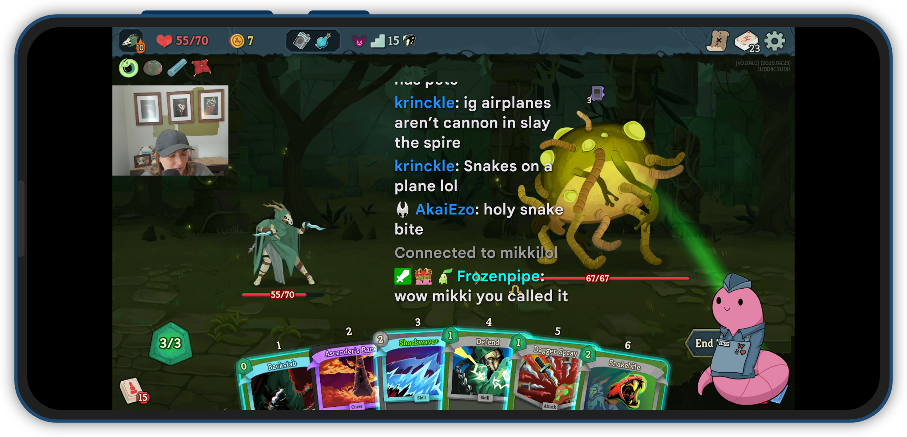
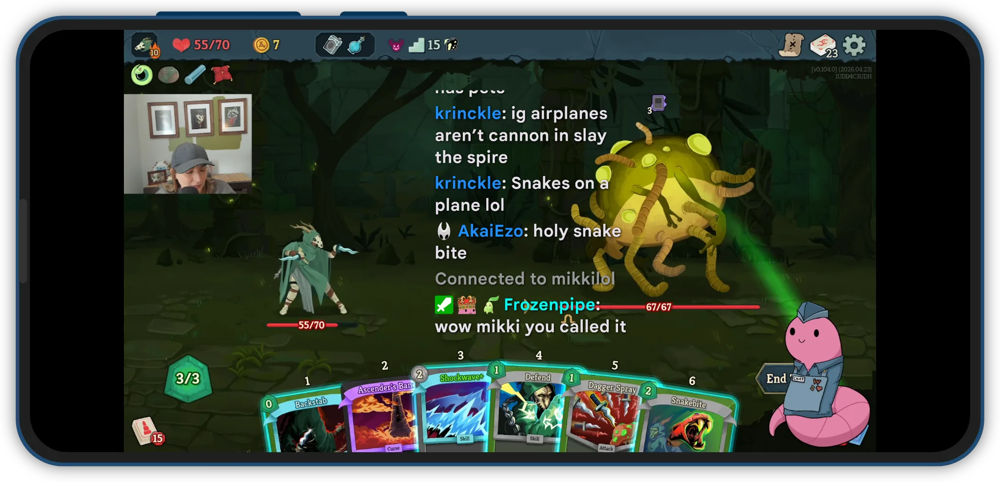
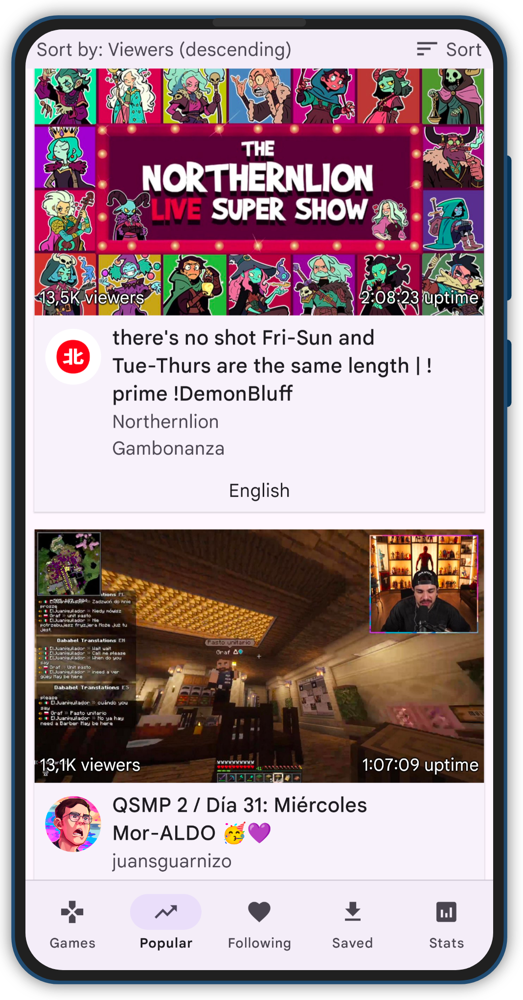

A TWITCH CLIENT WITH A TWIST
Your stream.
Your rules.
Your favorite streams, with room to enjoy them. A free, open-source Twitch client for Android that puts you in control.
Android 6.0+ · Free & open source

Keep the view.
Your playback.
Real app footage. Floating-chat demo recorded before 1.3.
SMALL DETAILS. BIG DIFFERENCE.
Make yourself comfortable.
Pick a feature. Take a closer look.

Watch the demoThe conversation comes with you.
Keep chat over the stream, move it where you want, and give the video the space it deserves.
Device screenshot and demo recorded before 1.3.


That sweet spot? Find it.
Quick VoD scrubbing. Speed, quality, audio-only and chat-only modes. Swipe for brightness and volume; pinch between Fit and Fill in landscape.
Native 1.3 previews. Speed uses enlarged text. Tap an image for a closer look.
 Stays on your device
Stays on your deviceYour watching, in perspective.
Local stats and watch-history insights: viewing time, favorite channels, categories, and streaks. Your habits stay yours.
Native 1.3 layout preview with sample data. Tap the image for a closer look.

Settle in.Phones & tablets
Wide & resized windows
A comfy fit for your screen.
Browse live channels, then settle into playback. Layouts adapt to phones, tablets, and wider windows, with controls that stay within reach.
Discovery device screenshot recorded before 1.3.
YOUR NEXT STREAM IS CALLING.
Come on in.
A polished fork of Xtra, with in-app updates
and release notes to keep you in the loop.
Download and install from GitHub Releases.
Verify the APK with its checksum and signing certificate.